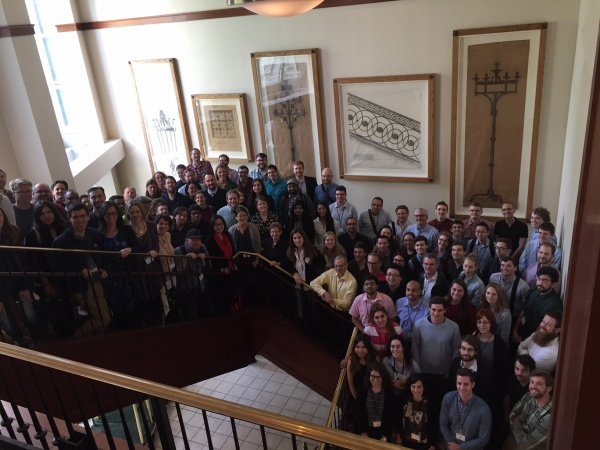
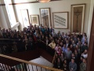

CEMS 2017

For information on next year's conference, see CEMS 2018. Information will be added as it becomes available.
The 2017 Context and Episodic Memory Symposium (CEMS), then in its thirteenth year, was held at the Inn at Penn in Philadelphia, PA, on May 4th and 5th, 2017.
The symposium is designed to be a forum for the exchange of ideas among colleagues working on theoretical and empirical approaches to the study of context and episodic memory, broadly construed.
Conference Registration
Registration for CEMS 2017 is now closed.
Location & Hotel
The venue for CEMS 2017 was the Inn at Penn, located on the campus of the University of Pennsylvania.
The Inn at Penn is a Four Diamond Hilton hotel, located at 3600 Sansom Street in historic Philadelphia, PA.
More information on the Inn at Penn can be found on their website.
Hotel
In addition to its role as the venue for CEMS 2017, the Inn at Penn served as the preferred hotel for the event.
Click here to view this location on Google Maps
Travel
The University of Pennsylvania is served by Philadelphia International Airport and Amtrak 30th Street Station, and is a short train or taxi ride away from both.
From the Airport
- Towncar
- Uber is a on-demand towncar service that you can summon using an app on your iPhone or Android device, or from m.uber.com, or by texting an address and city to UBR-CAB (827-222). You must create an account to request a ride.
- Rate estimates for a ride between the airport and the Inn at Penn Airport are approximately $20-25 for a towncar, $45-60 for a luxury sedan, and $60-70 for a luxury SUV (up to 6 people comfortably)
- Link a credit card to your account. No need to pay your driver directly, and tip is included.
- For additional information, Uber hosts a webpage with info on travel to and from the airport.
- Taxi
- One-way taxi fare between The Inn at Penn and the airport is approximately $32.50.
- For trips originating at the airport, there is an additional $1.50 fee.
- Most cabs hold up to 3 people. An additional fee of $1 will be charged for each passenger after the first.
- The trip takes between 15-30 minutes depending on traffic.
- Regional Rail
- The airport is serviced by SEPTA's Airport Regional Rail line, which makes a stop at each airport terminal.
- In Center City, you may utilize either the University City or 30th Street Station stops on the Airport line.
- University City is a pleasant 0.6 mi walk through Penn's campus, while 30th Street Station is a less-pleasant 0.8 mi, but easier to hail a cab if desired.
- Tickets between the airport and Center City are $8.00 per person each way when purchased on the train. Tickets purchased in advance at a station are discounted to $6.50.
- The train is scheduled to run every 30 minutes. The full Airport Line schedule can be found here.
- The trip takes approximately 20 minutes each way.
- A complete SEPTA transit map can be found here
From 30th Street Station
- The walk from 30th Street Station to the Inn at Penn is roughly 0.8 miles and goes through the campus of Drexel University.
- There is a taxi stand immediately outside the East doors of the station.
- SEPTA's trolley and bus lines connect at 30th Street Station and cost $2.25 (exact change and tokens only). SEPTA tokens can be purchased for $1.80 each, and may be used on all subway, trolley, and bus lines.
- The Inn at Penn is located adjacent to the 36th Street Trolley station. Route 11, 13, 34, and 36 trolleys provide transit between this station and 30th Street.
Driving/Parking
- The University of Pennsylvania is close to both I-76 and I-95.
- The Inn at Penn offers valet parking at a rate of $43 for overnight parking with in and out privileges and 20.00 for daily event parking.
- Self parking is available at a garage at 38th & Sansom, one block from The Inn At Penn. More garages may be found on this map.
Getting Around
- SEPTA subways, trolleys, and buses run all over Philadelphia.
- Normal base rate is $2.25 cash (exact change only), or a token. Tokens can be purchased for $1.80 each. More information about fares can be found here.
- You may find a complete system map here. You can also find transit directions on Google Maps.
- SEPTA Independence Passes are available for $12 per person or $29 for a family pass. An Independence Pass provides unlimited one-day travel on all buses, subways, trolleys, and Regional Rail trains.
- Taxis are plentiful.
- Fares are a $2.70 flag drop plus $0.23 per 1/10 mi or 38 seconds of wait time.
- Uber is a on-demand towncar service that you can summon using an app on your iPhone or Android device, or from m.uber.com, or by texting an address and city to UBR-CAB (827-222). You must create an account to request a ride.
- Normal rates for a towncar are a $1.25 base fare, plus $1.10 per mile and $0.18 per minute of wait time, as well as a $1.25 service fee. Minimum fare is $5.75. Luxury car and SUV rates are higher.
- Link a credit card to your account. No need to pay your driver directly, and tip is included.
- Sign up using this CEMS link and receive a $10 bonus credit towards your first ride.
Abstract Submission
Abstract Submission for CEMS 2017 is now CLOSED. Thank you for your submissions.
The symposium is designed to be a forum for the exchange of ideas among colleagues working on theoretical and empirical approaches to the study of context and episodic memory, broadly construed.
The format of CEMS is to have a relatively small number of spoken presentations each followed by a commentary given by a scientist working on related problems. The program committee aims to identify submissions that highlight major new theoretical and/or empirical advances. Papers not selected for these spoken presentations can be given as poster presentations. In previous years, posters have been a major highlight of the meeting and have been very well attended.
Schedule
If you are presenting and have scheduling conflicts, please let us know as soon as possible by emailing context.symposium@gmail.com
| Thursday | Friday | ||
|---|---|---|---|
| 8:30 | Breakfast | 8:30 | Breakfast |
| 9:00 | Opening Remarks | 9:00 | Ida Momennejad |
| 9:05 | Barbara Knowlton | 9:25 | Kenneth Malmberg |
| 9:30 | Andrew Yonelinas | 9:50 | Maureen Ritchey |
| 9:55 | Anna Schapiro | 10:05 | Neal W. Morton |
| 10:10 | Lili Sahakyan | 10:20 | Break |
| 10:35 | Break | 10:50 | Geoff Ward |
| 11:00 | Keynote Address: Richard Shiffrin | 11:05 | Lynn Lohnas |
| 12:00 | Group Photo | 11:20 | Gregory Cox |
| 12:30 | Lunch | 11:35 | Jeremy B. Caplan |
| 14:00 | John H. Wittig, Jr | 11:50 | Lunch |
| 14:15 | Christoph Weidemann | 13:30 | Nicole Long |
| 14:30 | Robert Nosofsky | 13:45 | Karl Healey |
| 14:45 | Deborah Talmi | 14:00 | Data Blitz, including: |
| 15:00 | Michael R. Dulas | 1. Inder Singh | |
| 15:15 | Break | 2. Merika Wilson | |
| 15:40 | Data Blitz, including: | 3. Brian M. Siefke | |
| 1. Ethan Solomon | 4. James W. Antony | ||
| 2. Alexa Tompary | 5. Joey Ka-Yee Essoe | ||
| 3. Patrick Sadil | 6. James E. Kragel | ||
| 4. Marcus K. Benna | 7. Iva K. Brunec | ||
| 5. Sucheta Chakravarty | 15:30-17:00 | Poster Session 2 | |
| 6. Youssef Ezzyat | |||
| 7. Jeffrey Starns | |||
| 8. Jack H. Wilson | |||
| 9. Aya Ben-Yakov | |||
| 10. Anthony Jang | |||
| 17:00-18:30 | Reception & Poster Session 1 | ||
List of featured spoken presentations
First author will be presenting unless otherwise noted. First author's affiliation is noted for each presentation below.
Keynote Presentation
- Dr. Richard Shiffrin, Distinguished Professor, Department of Psychological and Brain Sciences, Indiana University, Bloomington
Spoken Presentations
- Ida Momennejad, Evan Russek, Matthew Botvinick, Sam Gershman, Nathaniel Daw (Princeton Neuroscience Institute): The successor representation in learning and memory
- Barbara J. Knowlton, Joseph P. Hennessee, Alan D. Castel (University of California, Los Angeles): Recognizing What Matters: Effects of Stimulus Value on Memory for Incidental Contextual Details
- Andrew Yonelinas (University of California, Davis): Consolidation Theory Reconsidered: Evidence in Favor of a Context Model
- Lili Sahakyan (University of Illinois at Urbana-Champaign): Principles of memory search shed light on the instability in memory phenomena
Short Spoken Presentations
- Lynn J. Lohnas, Katherine Duncan, Thomas Thesen, Orrin Devinsky, Lila Davachi (New York University): Time-resolved memory reinstatement and separation during memory decisions
- Christoph T. Weidemann, Michael J. Kahana (University of Pennsylvania): EEG activity reveals dynamics of recognition memory
- John H. Wittig, Jr., Kareem A. Zaghloul (NINDS): Attention enhances verbal memory by suppressing background activity in the human anterior temporal lobe
- Gregory E. Cox, Pernille Hemmer, Amy H. Criss (Syracuse University): Information and Processes Underlying Semantic and Episodic Memory Across Tasks, Items, and Individuals
- Deborah Talmi, Lynn Lohnas, Nathaniel Daw (University of Manchester): Context at the helm of the emotional modulation of memory
- M.R. Dulas, M.C. Duff, N.J. Cohen (University of Illinois at Urbana-Champaign): The Impact of Age, Attention, and Brain Lesions on Context Boundary effects
- Neal W. Morton, Alison R. Preston (The University of Texas at Austin): Medial prefrontal cortex supports flexible memory retrieval
- Kenneth J. Malmberg, Sudeep Sarkar (University of South Florida): A Bayesian Network Model of the Reinstatement of Autobiographical Context
- M. Karl Healey (Michigan State University): Temporal Contiguity in Incidentally Encoded Memories
- Anna C. Schapiro, Elizabeth A. McDevitt, Sara C. Mednick, Timothy T. Rogers, Kenneth A. Norman (Beth Israel Deaconess Medical Center and Harvard Medical School): Enhancement and prioritization of structured information over sleep and wake
- Yang Liu, Jeremy B. Caplan (Presenting) (University of Alberta, Edmonton): Backward serial recall of chunked lists challenges the independence assumption of positional coding models
- Caterina Cinel, Cathleen Cortis Mack, Geoff Ward (presenting) (University of Essex): Towards augmented human memory: Retrieval practice and Retrieval-Induced Forgetting in the real world
- Maureen Ritchey, Andrew P. Yonelinas, Charan Ranganath (Boston College): Separable neural systems for encoding emotion and context information in episodic memory
- Robert Nosofsky (Indiana University): High-Dimensional Category Representations
- Nicole M. Long, Michael R. Sperling, Gregory A. Worrell, Kathryn A. Davis, Robert E. Gross, Bradley C. Lega, Barbara C. Jobst, Sameer A. Sheth, Kareem Zaghloul, Joel M. Stein, Michael J. Kahana (University of Oregon): Contextually mediated spontaneous retrieval is specific to the hippocampus
Data Blitz Sessions
Thursday
- Ethan Solomon and Michael J. Kahana (University of Pennsylvania): Detailed structure of the whole-brain theta connectivity that supports human memory
- A. Tompary, L. Davachi (New York University): Using sequence learning to investigate the restructuring of related memories over time
- Patrick Sadil, Kevin Potter, David E. Huber, Rosemary A. Cowell (University of Massachusetts, Amherst): A continuous flash suppression study of implicit visual recollection
- Marcus K. Benna, Stefano Fusi (Columbia University): Optimal long-term memory in complex synapses with bounded dynamical variables
- Sucheta Chakravarty, Esther Fujiwara, Christopher R. Madan, Sara E. Tomlinson, Isha Ober, Jeremy B. Caplan (University of Alberta): Reward-driven memory biases may be due to utility rather than value
- Youssef Ezzyat, Paul Wanda, Joel M. Stein, Sandhitsu Das, Richard Gorniak, Michael R. Sperling, Ashwini D. Sharan, Robert Gross, Cory S. Inman, Bradley C. Lega, Kareem Zaghloul, Gregory A. Worrell, Barbara C. Jobst, Katherine A. Davis, Daniel S. Rizzuto & Michael J. Kahana (University of Pennsylvania): Direct brain stimulation in closed-loop to modulate human episodic memory encoding
- Jeffrey Starns, Chad Dube, Mathew Frelinger (University of Massachusetts): The speed of memory errors shows the influence of misleading information
- Jack H. Wilson, Amy H. Criss (Syracuse University): Output Interference and Release in Cued Recall
- Aya Ben-Yakov, Rik Henson (MRC Cognition and Brain Sciences Unit, Cambridge, UK): The role of context shifts in hippocampal parsing of naturalistic experience
- Anthony Jang, John Wittig, Sara Inati, and Kareem Zaghloul (NINDS): Human cortical neurons in the anterior temporal lobe reinstate spiking activity during verbal memory retrieval
Friday
- Inder Singh, Aude Oliva, Marc W. Howard (Boston University): Serial search through the past and the future
- Merika Wilson, Kevin W. Potter, Rosemary A. Cowell (University of Massachusetts): Recognition Memory Shielded from Semantic but not Perceptual Interference in Natural Aging
- Brian M. Siefke, Per B. Sederberg (Ohio State University): A model of change-based distinctiveness effects in source memory
- James W. Antony, Kenneth A. Norman (Princeton University): Retrieval affects the shape of forgetting curves
- Joey Ka-Yee Essoe, Nicco Reggente, Ai Ohno, Hera Youn-Ji Baek, Jesse Rissman (University of California, Los Angeles): Distinctive virtual reality contexts bolster long-term retention of interference-prone materials
- James E. Kragel, Youssef Ezzyat, Michael R. Sperling, Richard Gorniak, Gregory A. Worrell, Brent M. Berry, Robert E. Gross, Bradley Lega, Kathryn A. Davis, Sandhitsu R. Das, Joel M. Stein, Barbara C. Jobst, Kareem A. Zaghloul, Sameer A. Sheth, Daniel S. Rizzuto, & Michael J. Kahana (University of Pennsylvania): Intrinsic functional architecture of cortico-hippocampal networks determines episodic memory formation in humans
- Iva K. Brunec, Jason D. Ozubko, Tovi Ander, Morris Moscovitch, Morgan D. Barense (University of Toronto): Boundaries during navigation shape memory for event order and duration
Poster Sessions
Thursday
- Ari E. Kahn, Elisabeth A. Karuza, Sharon L. Thompson-Schill, Jean M. Vettel, Danielle S. Bassett (University of Pennsylvania): Network context drives learnability of relational data
- Cathleen Cortis Mack, Caterina Cinel, Nigel Davies, Michael Harding, Geoff Ward (presenting) (University of Essex): Serial position, output order, and list length effects for words presented on smartphones over very long intervals
- Robert B. Yaffe, Ammar Shaikhouni, Jennifer Arai, Sara K. Inati, Kareem A. Zaghloul (NINDS): Cued Memory Retrieval Exhibits Reinstatement of Spectral Dynamics on a Faster Timescale
- Andrew C. Heusser, Kirsten Ziman, Jeremy R. Manning (Dartmouth College): HyperTools: A Python toolbox for visualizing and manipulating high-dimensional data
- Rahul Bhui (Harvard University): Echoes of the Past: Order Effects in Choice and Memory
- Vishnu Sreekumar, Sara Inati, & Kareem Zaghloul (NINDS): Traveling waves in the human cortex facilitate associative memory
- Steven Tompson, Ari Kahn, Emily Falk, Jean Vettel, & Danielle S. Bassett (University of Pennsylvania): How do people learn social and non-social community structures?
- Hyojeong Kim, Margaret L. Schlichting, Alison R. Preston, Jarrod A. Lewis-Peacock (University of Texas): The precision of memory-based prediction biases memory pruning
- Andrew C. Heusser, Kirsten Ziman, Jeremy R. Manning (Dartmouth College): Harnessing the power of mnemonic fingerprints: Maximizing learning potential by personalizing stimulus organization during adaptive list learning
- Lucy L. W. Owen, Jeremy R. Manning (Dartmouth College): Towards human SuperEEG
- Anne C. Mennen, Jordan Poppenk, Megan T. deBettencourt, Kenneth A. Norman (Princeton University): Weakening memories through closed-loop modulation of perceptual distraction
- Nathanael Cruzado, Zoran Tiganj, Scott Brincat, Earl Miller, Marc Howard (Boston University): Compressed Temporal Representation During Visual Paired Associate Task in Monkey PFC and Hippocampus
- Tomi Ann Limcangco, Yvonne Chen, Kenichi Kato, Jeremy B. Caplan (University of Alberta): Visual imagery and the relationship between association-memory and within-pair order
- Blake L. Elliott, Samuel M. McClure, Gene A. Brewer (Arizona State University): Individual Differences in Value-Directed Encoding
- Michael J. Kahana, Eash V. Aggarwal (presenting) (University of Pennsylvania): The variability puzzle in human memory
- Adam P. Young, Alice F. Healy, Matt Jones, Lyle E. Bourne, Jr. (University of Colorado): Selective Interference Affects Spacing Effects at Acquisition
Friday
- N.A. Kambi, J.M. Phillips, Y.B. Saalmann (University of Wisconsin-Madison): Anterior thalamus regulates information transmission between hippocampus and retrosplenial cortex according to memory demands
- D. Frank, D. Montaldi, & D. Talmi (presenting) (University of Manchester): Schema-related predictions and their violations in episodic memory
- Ulises Rodriguez Dominguez, Jeremy B. Caplan (University of Alberta, Edmonton): The population of grid cells as a modified hexagonal Fourier basis set
- Chi T. Ngo, Nora S. Newcombe, Ingrid, R. Olson (Temple University): Development of relational memory and pattern separation: Related or distinct memory processes?
- Brynn Sherman, Sarah DuBrow, Jonathan Winawer, Lila Davachi (New York University): Assessing the role of working memory representations in temporal duration judgments
- Avi J.H. Chanales, Franziska R. Richter, Brice A. Kuhl (New York University): Online integration of overlapping events prevents subsequent interference
- Silvy H.P. Collin, Branka Milivojevic, Christian F. Doeller (Radboud University): Hippocampal and prefrontal updating of narrative hierarchies
- Oded Bein, Lila Davachi (New York University): Can learning hinder learning?
- Helena P. L. Jacob, David E. Huber (University of Massachusetts, Amherst): Separating one word from the next with neural habituation: An ERP study of perceptual decision making
- Jamal Williams, Janice Chen, Chris Baldassano, Uri Hasson, Kenneth Norman (Princeton University): Temporal and Neural Dynamics of Musical Contexts
- Yeon Soon Shin, Yael Niv (Princeton University): Finding it hard to change your mind after one bad experience? You might be too (approximately) Bayesian
- Sarah DuBrow, Yael Niv, Kenneth Norman (Princeton University): A role for conflict in segmenting memories
- Rivka T. Cohen, Michael J. Kahana, Robert Nosofsky (University of Pennsylvania): Recognition ROCs and exemplar theory
- Lucas D. Huszar, Kevin W. Potter, David E. Huber (University of Massachusetts, Amherst): Retrieval induced forgetting does not cause forgetting of visual details
- Adam Osth, Anna Jansson, Simon Dennis, Andrew Heathcote (University of Melbourne): Modeling the dynamics of recognition memory testing with a combined model of retrieval and decision making
- Judy Yi-Chieh Chiu, Lili Sahakyan, Brian Gonsalves, Neal Cohen (UIUC): Differential Effect of Repetition for Item and Context Information in Recognition Memory: an fMRI Investigation
Gallery

Past Symposia
For information about past CEMS events, please click here.